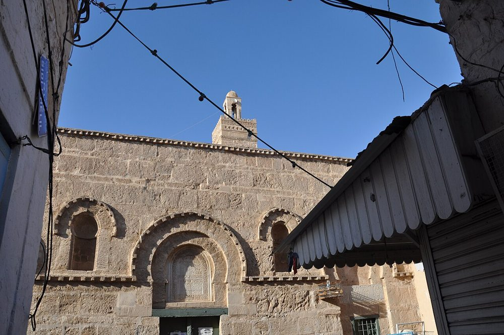
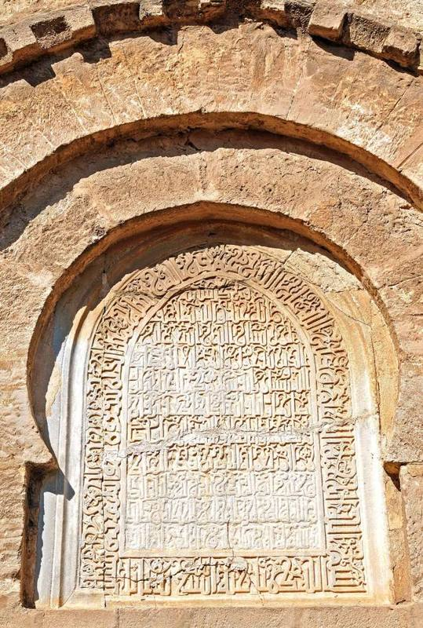

تعارف
صفاقس کے مدینہ کے قلب میں نویں صدی کی ایک مسجد، جس کا زیری دور میں تراشا گیا مشرقی رخ اور قیروان کے مینار جیسا مینار افریقیہ کے فن کے شاہکار ہیں۔
تصاویر


تاریخ
پہلی عمارت تقریباً 850ء میں اغالبہ کے دور میں، صفاقس کی فصیل کے ساتھ ہی، بنی۔ زیری دور میں مسجد کو آراستہ کیا گیا: سامنے کی دیوار کے دو کتبوں پر 988ء اور 1085ء کی تاریخیں ہیں۔ بارھویں صدی میں تبدیلی کے بعد اٹھارھویں صدی کے بڑے کاموں میں اس نے اپنی اصل پیمائش دوبارہ حاصل کی۔
فنِ تعمیر
مشرقی رخ پر نعل نما محرابوں والے دروازے اور کھڑکیاں، طاق اور دندانے دار کارنس ترتیب سے ہیں؛ یہاں دو موروں والی ایک بازنطینی تختی دوبارہ استعمال کی گئی ہے۔ تقریباً پندرہ میٹر بلند مربع مینار قیروان کے مینار کی یاد دلاتا ہے مگر اس کی آرائش زیادہ نفیس ہے: تراشے ہوئے گول نقش اور خوبصورت پھول دار کوفی خط۔ زاویہ نما نماز کے ہال میں 9 راہداریاں ہیں۔
اہم تاریخیں
- 850اغالبہ کے دور میں پہلی عمارت (اس تاریخ کے قریب)
- 988زیری آرائش (رخ کا کتبہ)
- 1085رخ پر دوسرا تاریخ والا کتبہ
- 1912تاریخی یادگار قرار
زیارت
یہ سب سے پہلے نماز کی جگہ ہے: مناسب لباس پہنیں، نماز کے ہال میں داخل ہونے کے لیے جوتے اتاریں اور نماز کے اوقات سے بچیں۔ کئی بڑی مساجد میں غیر مسلم زائرین صحن میں جا سکتے ہیں، نماز کے ہال میں نہیں۔ اوقات بدلتے رہتے ہیں: موقع پر معلوم کریں۔
نقشے پر
دستاویزات اور لنکس
ماخذ
- تحریریں "تیونس کی مساجد" نے اوپر دی گئی دستاویزات (ویکیپیڈیا، قنطرہ، Discover Islamic Art، یونیسکو) کی بنیاد پر لکھیں، 09/10/2026 کو جانچی گئیں۔
- Wikidata : Q12185322 (CC0)
- تصاویر: وکیمیڈیا کامنز، ہر تصویر کے نیچے مصنف اور لائسنس۔
- مقام: OpenStreetMap (ODbL) اور وکی ڈیٹا۔